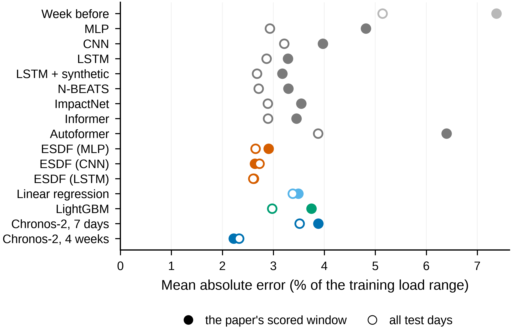
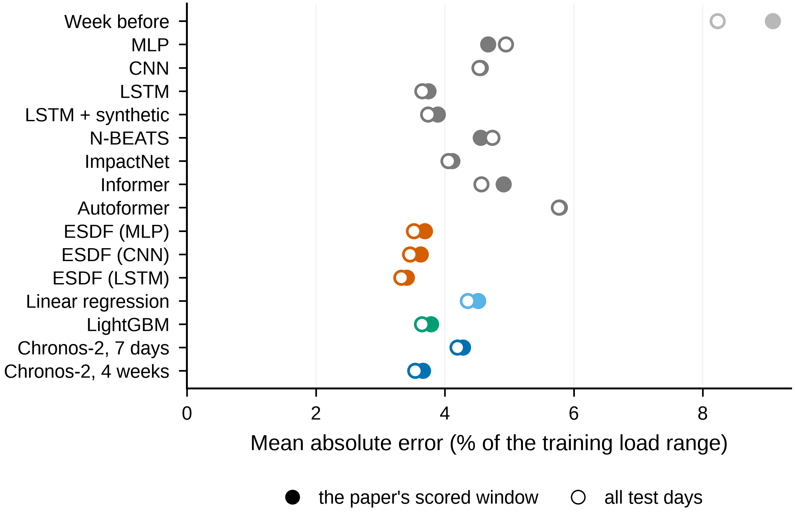
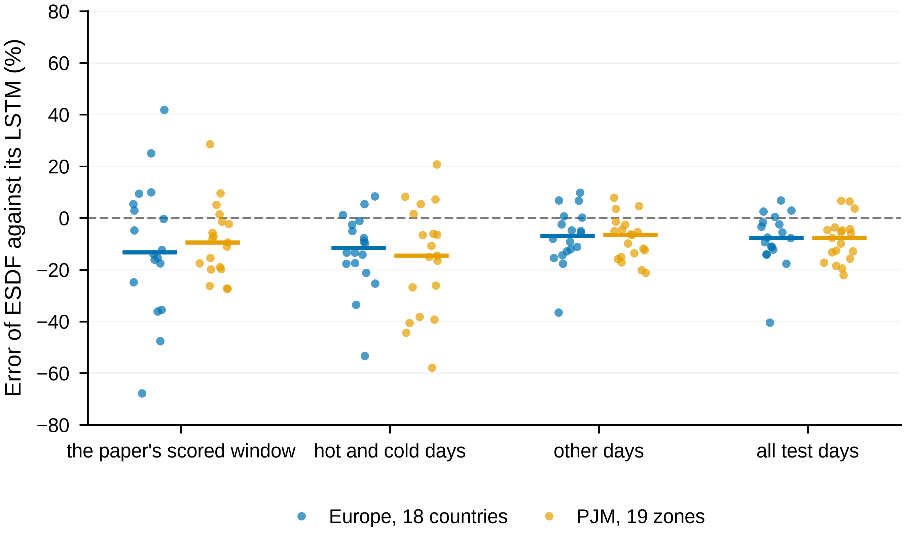
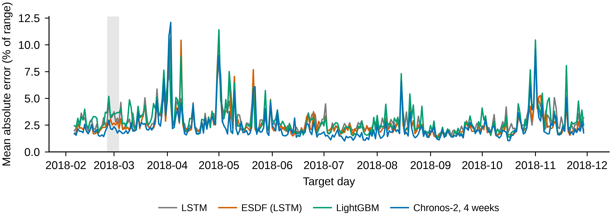
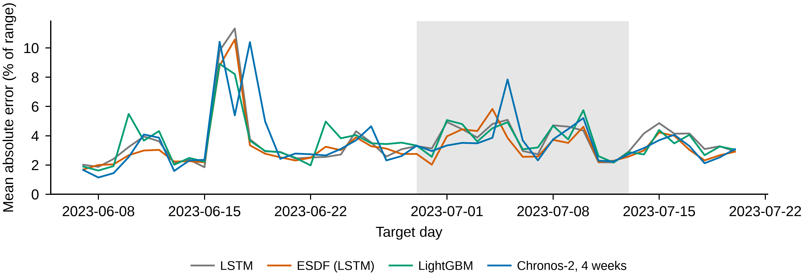

Load forecasts under heat and cold waves: a check of Lu et al. (2026)
A reading of "Electricity load forecasting under extreme heat and cold waves" (Lu, Qin, Zhou,
Bai, Wen, Kang and Wang, Nature Communications 17, 10041, published 21 August 2026) and of its
code, with an independent check on the paper's own public data, 14 November 2026, on CPU.
Command: esdf-check. Module: code/src/sense_energy/experiments/esdf_check.py. Tables in
code/reports/esdf_check/, figures from code/scripts/esdf_check/. The paper's repository
(github.com/hkuedl/Heat-Cold_Wave_Load_Forecasting, MIT licence, commit 0036608 of 14 October
2026) is kept in code/data/external/esdf/: its public data (Europe, PJM), its saved forecasts
and its Python files. The paper's code was read, not run.
What the page answers: what the paper does and what its code scores; whether its numbers hold on the days that it does not score; how references that it leaves out do on the same samples; and what follows for the NHS panel.
The answers in short
- The method works, by about a tenth. Over all days of the paper's test periods, the proposed model has 9 % less error than the same network without it (Europe 2.61 against 2.86, PJM 3.33 against 3.65, in per cent of the load range). That holds on hot days, cold days and ordinary days alike.
- The headline gain comes from one window per region. The paper reports the error on 8 consecutive days for all 18 European countries (25 February to 4 March 2018) and on 15 consecutive days for all 19 PJM zones (29 June to 13 July 2023). In Europe the method is 20 % ahead of its best baseline inside that window and 4 % ahead on the 297 test days.
- In PJM the scored window is not a heat wave. By the 95th percentile of the training period, 1.5 of its 15 days are hot. The processed PJM file has no data from 25 July to 1 September 2023, the hottest weeks of that summer.
- A model with no training is level with it. Chronos-2, given four weeks of history and the same temperature, has 11 % less error than the method in Europe (13 of 18 countries) and 6.5 % more in PJM (better in 6 of 19 zones). With the paper's seven days of history it is clearly worse. A gradient-boosted model and a linear regression with the paper's inputs do not reach the method.
- The large errors are public holidays. They are 3.8 % of the European test days and 12.5 % of the method's error; every model is 2.5 to 4.4 times worse on them. No model in the paper gets the calendar.
- For the NHS panel the lever is small in error and large in value. Heat-wave and cold-wave days hold 19 % of our forecast error on 12 % of the site-days; against the same site and month their excess is 5 % of all error, where days on which a plant starts or stops hold 42 %. But on heat-wave days the forecast keeps 33 % of the achievable peak cut against 50 % on the other days of the same months (section 6).
1. What the paper proposes
Extreme Synthesis-Disentanglement Forecasting (ESDF), in three stages:
- Synthesis. A score-based diffusion model (U-Net, variance-exploding SDE, 1,000 steps, predictor-corrector sampling) learns the joint distribution of eight days of hourly load and temperature. A classifier on noisy samples (cold wave, heat wave, other) steers sampling towards extreme regimes. The model makes as many synthetic samples as there are real ones (1,200 per European country, 800 per PJM zone).
- Disentanglement. A domain separation network: one shared encoder and one private encoder each for real and synthetic samples, a forecast head and a reconstruction head. The loss is the L1 forecast error on both domains, 0.1 times the reconstruction error, a maximum mean discrepancy term that aligns the shared codes (weight 0.5 or 1) and an orthogonality penalty between shared and private codes (weight 0.5 or 1).
- Inference. The shared and the real-domain encoder with the real-domain head.
The paper reports 80 series in six regions (Europe 18, PJM 19, Texas, Guangdong 20, Hunan 14, India 2), an accuracy of 97.1 % (one minus the normalised error) and 9.8 to 33.5 % less normalised absolute error than the strongest baseline of each region. Baselines: MLP, LSTM, CNN, N-BEATS, ImpactNet, Informer, Autoformer. Public data: Europe (Open Power System Data) and PJM; the Chinese series are not released.
2. What the code scores
Read from forecasting_using_generated_samples/ (Europe) and
forecasting_using_generated_samples_PJM/; line numbers at commit 0036608.
| Point | What the code does | Where |
|---|---|---|
| Task | The 24 hourly loads of day D from the hourly load and temperature of D−7 to D−1 and the observed temperature of D. One sample is an 8 × 24 slice. | Forecasting_model_training.py, train_dataloader; model(x, label[:, 24:48]) |
| Unit | Load is scaled to 0–1 by the minimum and maximum of the training period. A reported error of 0.03 is 3 % of that range, about 2.3 % of mean load in Europe and 3.4 % in PJM. | data_scaler |
| Test set | Samples of the last year, but the reported error is taken on [24·day : 24·(day+period)]: day = 19, period = 8 (Europe), day = 22, period = 15 (PJM). One window, the same for every series of the region. |
lines 29–30; PJM lines 33–34 |
| Wave label | Daily temperature is the mean of the day's highest and lowest hour. A day is a heat (cold) wave day when a positive excess over the 95th (below the 5th) percentile exists; the acceleration term only scales the index, so no duration rule is in effect. | Dataset_Loader_2D.py lines 53–62 |
| Guidance | The weight of the classifier gradient is numda = 0 in the published Europe code and 10 in the PJM code. With 0 the Europe "cold wave" samples are unconditional draws. |
diff_Model_2D.py line 12 |
| Validation | A random 20 % of the training samples (the paper says 10 %). Neighbouring samples share seven of eight days, so the validation set is not independent of the training set. | line 132 |
| Seeds | One seed (2) for every run. | throughout |
| Test curve | The test error is computed after every epoch for the convergence figures. The saved model is the one with the best validation loss. | training_process, training_process_dsn |
| PJM data | The processed file has 113 of the 153 days from May to September 2023: 25 July to 1 September and 16 September are missing. Test samples are 7 June to 20 July. | Data/.../PJM_reformed_data/ |
The samples were rebuilt from the paper's loaders and compared with the true column of its
saved forecasts: all 37 public series match exactly (297 samples per European country, 44
per PJM zone).
Table: 37 rows
| region | series | samples | paper_samples | max_abs_diff_true | hot_days | cold_days | window_first_day | window_last_day | window_hot_or_cold_days |
|---|---|---|---|---|---|---|---|---|---|
| europe | Belgium | 297 | 297 | 0 | 39 | 18 | 2018-02-25 | 2018-03-04 | 6 |
| europe | Croatia | 297 | 297 | 0 | 13 | 14 | 2018-02-25 | 2018-03-04 | 8 |
| europe | Denmark | 297 | 297 | 0 | 55 | 25 | 2018-02-25 | 2018-03-04 | 8 |
| europe | Finland | 297 | 297 | 0 | 44 | 31 | 2018-02-25 | 2018-03-04 | 8 |
| europe | France | 297 | 297 | 0 | 23 | 19 | 2018-02-25 | 2018-03-04 | 5 |
| europe | Germany | 297 | 297 | 0 | 32 | 22 | 2018-02-25 | 2018-03-04 | 7 |
| europe | Hungary | 297 | 297 | 0 | 13 | 10 | 2018-02-25 | 2018-03-04 | 8 |
| europe | Ireland | 297 | 297 | 0 | 55 | 21 | 2018-02-25 | 2018-03-04 | 8 |
| europe | Italy | 297 | 297 | 0 | 12 | 11 | 2018-02-25 | 2018-03-04 | 5 |
| europe | Latvia | 297 | 297 | 0 | 45 | 28 | 2018-02-25 | 2018-03-04 | 8 |
| europe | Lithuania | 297 | 297 | 0 | 34 | 25 | 2018-02-25 | 2018-03-04 | 8 |
| europe | Netherlands | 297 | 297 | 0 | 37 | 20 | 2018-02-25 | 2018-03-04 | 7 |
| europe | Norway | 297 | 297 | 0 | 54 | 21 | 2018-02-25 | 2018-03-04 | 8 |
| europe | Poland | 297 | 297 | 0 | 24 | 19 | 2018-02-25 | 2018-03-04 | 8 |
| europe | Romania | 297 | 297 | 0 | 0 | 8 | 2018-02-25 | 2018-03-04 | 7 |
| europe | Slovenia | 297 | 297 | 0 | 13 | 26 | 2018-02-25 | 2018-03-04 | 8 |
| europe | Sweden | 297 | 297 | 0 | 55 | 26 | 2018-02-25 | 2018-03-04 | 8 |
| europe | Switzerland | 297 | 297 | 0 | 14 | 11 | 2018-02-25 | 2018-03-04 | 5 |
| pjm | Allegheny Power System | 44 | 44 | 0 | 3 | 0 | 2023-06-29 | 2023-07-13 | 1 |
| pjm | American Electric Power Co., Inc | 44 | 44 | 0 | 2 | 0 | 2023-06-29 | 2023-07-13 | 1 |
| pjm | Atlantic Electric Company | 44 | 44 | 0 | 3 | 0 | 2023-06-29 | 2023-07-13 | 1 |
| pjm | Baltimore Gas and Electric Company | 44 | 44 | 0 | 3 | 0 | 2023-06-29 | 2023-07-13 | 3 |
| pjm | ComEd | 44 | 44 | 0 | 4 | 0 | 2023-06-29 | 2023-07-13 | 4 |
| pjm | Dayton Power and Light Company | 44 | 44 | 0 | 2 | 0 | 2023-06-29 | 2023-07-13 | 1 |
| pjm | Delmarva Power and Light | 44 | 44 | 0 | 3 | 0 | 2023-06-29 | 2023-07-13 | 1 |
| pjm | Dominion Energy | 44 | 44 | 0 | 3 | 0 | 2023-06-29 | 2023-07-13 | 3 |
| pjm | Duke Energy Ohio | 44 | 44 | 0 | 2 | 0 | 2023-06-29 | 2023-07-13 | 1 |
| pjm | Duquesne Light | 44 | 44 | 0 | 3 | 0 | 2023-06-29 | 2023-07-13 | 1 |
| pjm | East Kentucky Power Coop | 44 | 44 | 0 | 2 | 0 | 2023-06-29 | 2023-07-13 | 1 |
| pjm | First Energy - Pennsylvania Electric Company | 44 | 44 | 0 | 3 | 0 | 2023-06-29 | 2023-07-13 | 1 |
| pjm | Jersey Central Power and Light Company | 44 | 44 | 0 | 3 | 0 | 2023-06-29 | 2023-07-13 | 1 |
| pjm | Metropolitan Edison Company | 44 | 44 | 0 | 3 | 0 | 2023-06-29 | 2023-07-13 | 1 |
| pjm | Orion Energy | 44 | 44 | 0 | 3 | 0 | 2023-06-29 | 2023-07-13 | 1 |
| pjm | Pennsylvania Electric Company | 44 | 44 | 0 | 3 | 0 | 2023-06-29 | 2023-07-13 | 1 |
| pjm | Pennsylvania Power and Light Company | 44 | 44 | 0 | 3 | 0 | 2023-06-29 | 2023-07-13 | 1 |
| pjm | Potomac Electric Power | 44 | 44 | 0 | 3 | 0 | 2023-06-29 | 2023-07-13 | 3 |
| pjm | Public Service Electric and Gas Company | 44 | 44 | 0 | 3 | 0 | 2023-06-29 | 2023-07-13 | 1 |
source: code/reports/esdf_check/samples_check.csv (37 rows shown)
3. The reported numbers reproduce from the saved forecasts
The window error recomputed from the repository's saved forecasts against the paper's results workbook, mean over the series of the region:
| region | model | reported_mae | recomputed_mae | difference_pct |
|---|---|---|---|---|
| europe | Autoformer | 0.064 | 0.064 | -0.0001 |
| europe | CNN | 0.0407 | 0.0397 | -2.3497 |
| europe | ImpactNet | 0.0355 | 0.0355 | 0 |
| europe | Informer | 0.0345 | 0.0345 | -0.0001 |
| europe | LSTM | 0.0331 | 0.0329 | -0.7877 |
| europe | MLP | 0.0447 | 0.0482 | 7.8029 |
| europe | N-BEATS | 0.0329 | 0.0329 | 0 |
| europe | ESDF (LSTM) | 0.0248 | 0.0262 | 5.4885 |
| pjm | Autoformer | 0.0578 | 0.0578 | -0.0001 |
| pjm | CNN | 0.0456 | 0.0456 | -0.0001 |
| pjm | ImpactNet | 0.0412 | 0.0412 | 0.0002 |
| pjm | Informer | 0.0491 | 0.0491 | -0.0001 |
| pjm | LSTM | 0.0374 | 0.0374 | -0.0001 |
| pjm | MLP | 0.0467 | 0.0467 | 0 |
| pjm | N-BEATS | 0.0456 | 0.0456 | -0.0002 |
| pjm | ESDF (LSTM) | 0.0341 | 0.0341 | 0.0002 |
source: code/reports/esdf_check/reproduction.csv (16 rows shown)
All eight PJM numbers and the four Europe baselines that have one saved run reproduce exactly. The Europe numbers of the method and of its three backbones differ by 1 to 8 % between the workbook and the saved files (another run).
4. Beyond the scored window
Error in per cent of the training range, mean over the series; window is what the paper
reports, all_days every test day, hot_cold_days the days whose temperature is beyond the 5th
or 95th percentile of the training period (Europe: 31 hot and 20 cold days per country of 297;
PJM: 3 hot days of 44). The last columns count the series in which a model is below ESDF (LSTM).
Europe, 18 countries, test days 6 February to 29 November 2018

esdf_subsets_europe PDFinteractive; source: code/reports/esdf_check/table_europe.csv
| model | window_mae_pct | all_days_mae_pct | hot_cold_days_mae_pct | other_days_mae_pct | window_vs_esdf_pct | all_days_vs_esdf_pct | series_below_esdf_window | series_below_esdf_all_days | series |
|---|---|---|---|---|---|---|---|---|---|
| Week before | 7.38 | 5.14 | 5.23 | 5.2 | 181.81 | 97.3 | 0 | 0 | 18 |
| MLP | 4.82 | 2.93 | 3.45 | 2.84 | 84.02 | 12.5 | 1 | 0 | 18 |
| CNN | 3.97 | 3.21 | 3.4 | 3.19 | 51.67 | 23.34 | 1 | 0 | 18 |
| LSTM | 3.29 | 2.86 | 2.97 | 2.86 | 25.56 | 9.92 | 6 | 4 | 18 |
| LSTM + synthetic | 3.18 | 2.68 | 2.86 | 2.65 | 21.34 | 2.85 | 5 | 8 | 18 |
| N-BEATS | 3.29 | 2.71 | 2.81 | 2.71 | 25.8 | 4 | 4 | 6 | 18 |
| ImpactNet | 3.55 | 2.89 | 3.01 | 2.87 | 35.56 | 10.88 | 4 | 4 | 18 |
| Informer | 3.45 | 2.9 | 2.95 | 2.88 | 31.89 | 11.15 | 3 | 3 | 18 |
| Autoformer | 6.4 | 3.88 | 4.81 | 3.75 | 144.42 | 48.83 | 0 | 0 | 18 |
| ESDF (MLP) | 2.91 | 2.65 | 2.57 | 2.67 | 11.09 | 1.76 | 4 | 7 | 18 |
| ESDF (CNN) | 2.64 | 2.73 | 2.6 | 2.75 | 0.72 | 4.74 | 6 | 5 | 18 |
| ESDF (LSTM) | 2.62 | 2.61 | 2.51 | 2.62 | 0 | 0 | 0 | 0 | 18 |
| Linear regression | 3.49 | 3.38 | 3.24 | 3.4 | 33.31 | 29.66 | 5 | 1 | 18 |
| LightGBM | 3.75 | 2.97 | 2.98 | 2.99 | 43.16 | 14.17 | 3 | 1 | 18 |
| Chronos-2, 7 days | 3.88 | 3.51 | 3.22 | 3.6 | 48.37 | 34.86 | 3 | 1 | 18 |
| Chronos-2, 4 weeks | 2.22 | 2.33 | 1.99 | 2.41 | -15.1 | -10.61 | 13 | 13 | 18 |
source: code/reports/esdf_check/table_europe.csv (16 rows shown)
PJM, 19 zones, test days 7 June to 20 July 2023

esdf_subsets_pjm PDFinteractive; source: code/reports/esdf_check/table_pjm.csv
| model | window_mae_pct | all_days_mae_pct | hot_cold_days_mae_pct | other_days_mae_pct | window_vs_esdf_pct | all_days_vs_esdf_pct | series_below_esdf_window | series_below_esdf_all_days | series |
|---|---|---|---|---|---|---|---|---|---|
| Week before | 9.08 | 8.23 | 5.92 | 8.39 | 166.39 | 147.41 | 0 | 0 | 19 |
| MLP | 4.67 | 4.94 | 4.28 | 4.98 | 36.96 | 48.65 | 0 | 0 | 19 |
| CNN | 4.56 | 4.54 | 4.27 | 4.55 | 33.62 | 36.39 | 0 | 0 | 19 |
| LSTM | 3.74 | 3.65 | 3.68 | 3.64 | 9.76 | 9.67 | 4 | 3 | 19 |
| LSTM + synthetic | 3.89 | 3.74 | 3.51 | 3.74 | 14.09 | 12.37 | 4 | 5 | 19 |
| N-BEATS | 4.56 | 4.73 | 4.38 | 4.75 | 33.57 | 42.33 | 1 | 0 | 19 |
| ImpactNet | 4.12 | 4.06 | 3.59 | 4.08 | 20.72 | 21.94 | 3 | 1 | 19 |
| Informer | 4.91 | 4.56 | 4.88 | 4.54 | 43.98 | 37.19 | 3 | 0 | 19 |
| Autoformer | 5.78 | 5.77 | 5.71 | 5.76 | 69.51 | 73.42 | 0 | 0 | 19 |
| ESDF (MLP) | 3.69 | 3.52 | 3.33 | 3.53 | 8.11 | 5.82 | 5 | 4 | 19 |
| ESDF (CNN) | 3.62 | 3.46 | 3.09 | 3.48 | 6.21 | 3.92 | 3 | 3 | 19 |
| ESDF (LSTM) | 3.41 | 3.33 | 2.98 | 3.34 | 0 | 0 | 0 | 0 | 19 |
| Linear regression | 4.51 | 4.36 | 4.11 | 4.37 | 32.36 | 31.01 | 0 | 1 | 19 |
| LightGBM | 3.79 | 3.64 | 3.31 | 3.66 | 11.04 | 9.52 | 3 | 2 | 19 |
| Chronos-2, 7 days | 4.28 | 4.2 | 3.57 | 4.23 | 25.46 | 26.14 | 1 | 0 | 19 |
| Chronos-2, 4 weeks | 3.66 | 3.54 | 3.08 | 3.57 | 7.36 | 6.47 | 6 | 6 | 19 |
source: code/reports/esdf_check/table_pjm.csv (16 rows shown)
- Against its own backbone the method gains about 9 % everywhere. ESDF (LSTM) against the LSTM: Europe 2.61 against 2.86 on all days, PJM 3.33 against 3.65. The gain is not specific to extremes: in PJM it is 8.8 % inside the window and 8.8 % on all days.
- The Europe headline is a window effect. Inside the eight days the method is 20 % below the best baseline (2.62 against 3.29); on all test days it is 4 % below N-BEATS (2.61 against 2.71) and 3 % below the LSTM with the synthetic samples simply added (2.68).
- Eighty series are not eighty tests. The 18 European countries are scored on the same eight days of one cold spell, the 19 PJM zones on the same fifteen days. With one seed and no interval, the number of independent events behind the public results is two.

esdf_gain PDF
esdf_daily_europe PDF
esdf_daily_pjm PDF5. References that the paper does not have
All get the paper's inputs: the seven days of hourly load and temperature and the observed
temperature of the target day (Week before uses the load only).
- Chronos-2 with no training and four weeks of history: 11 % below the method in Europe, 6.5 % above it in PJM. Europe: 2.33 against 2.61 on all days (better in 13 of 18 countries), 1.99 against 2.51 on hot and cold days (15 of 18), 2.22 against 2.62 in the scored window. PJM: 3.54 against 3.33 (better in 6 of 19 zones).
- With the paper's seven days it is not enough: 3.51 (Europe) and 4.20 (PJM). One week of context holds one example of each weekday.
- Trained references with the paper's inputs stay behind: LightGBM 2.97 and 3.64, a linear regression per hour 3.38 and 4.36. The paper's neural baselines are not weak for this task.
- Why PJM differs. PJM summer load follows temperature closely, and the method has learnt
that response from two years of the zone; a model that reads four weeks in context has not.
A second reading cannot be excluded: the European national loads of 2015 to 2018 are public
and can be in the training data of a pre-trained model. On the NHS panel, which no public
model can have seen, the same model also leads (
doc/poc_results.md).
Public holidays. No model of the paper sees the calendar. On the public holidays of the 18 countries (3.8 % of the test days) every model has 2.5 to 4.4 times its error of the other days, and the method is worse than its backbone there (10.2 against 8.6):
| model | holiday_mae_pct | other_days_mae_pct | holiday_share_of_days_pct | holiday_share_of_error_pct | holiday_over_other |
|---|---|---|---|---|---|
| Week before | 14.87 | 4.83 | 3.76 | 9.57 | 3.08 |
| MLP | 10.08 | 2.7 | 3.76 | 11.25 | 3.73 |
| CNN | 9.3 | 3.02 | 3.76 | 9.48 | 3.08 |
| LSTM | 8.6 | 2.68 | 3.76 | 10.07 | 3.21 |
| LSTM + synthetic | 8.62 | 2.5 | 3.76 | 10.52 | 3.45 |
| N-BEATS | 8.3 | 2.53 | 3.76 | 10.36 | 3.29 |
| ImpactNet | 8.9 | 2.7 | 3.76 | 10.06 | 3.29 |
| Informer | 8.75 | 2.71 | 3.76 | 10.34 | 3.23 |
| Autoformer | 9.93 | 3.69 | 3.76 | 8.16 | 2.69 |
| ESDF (MLP) | 10.38 | 2.41 | 3.76 | 12.52 | 4.31 |
| ESDF (CNN) | 10.89 | 2.48 | 3.76 | 12.51 | 4.4 |
| ESDF (LSTM) | 10.2 | 2.37 | 3.76 | 12.55 | 4.3 |
| Linear regression | 9.77 | 3.18 | 3.76 | 9.11 | 3.07 |
| LightGBM | 10.38 | 2.74 | 3.76 | 11.25 | 3.79 |
| Chronos-2, 7 days | 8.27 | 3.37 | 3.76 | 7.42 | 2.45 |
| Chronos-2, 4 weeks | 9.34 | 2.11 | 3.76 | 12.66 | 4.42 |
source: code/reports/esdf_check/table_holidays_europe.csv (16 rows shown)
6. What follows for the NHS panel
The paper's premise is that models fail on rare extreme days. Tested on the panel with a
forecast for every day of the test window (91 sites, 342 days, Chronos-2 without covariates;
doc/forecast_error_anatomy.md), with the paper's labels (site temperature beyond the 5th or
95th percentile of the days before June 2025):
| matched_to | group | wave | sites | site_days | nmae_pct | nmae_level_oracle_pct | median_bias_pct |
|---|---|---|---|---|---|---|---|
| cold wave | all sites | cold wave | 91 | 817 | 13.6 | 11.2 | -3.3 |
| cold wave | all sites | other days | 91 | 7803 | 11.4 | 9.5 | -0.2 |
| cold wave | inpatient | cold wave | 33 | 285 | 11.4 | 9.4 | -3.4 |
| cold wave | inpatient | other days | 33 | 2760 | 10.1 | 8.7 | -0.4 |
| cold wave | on-site CHP | cold wave | 12 | 118 | 16.8 | 14.4 | -2.2 |
| cold wave | on-site CHP | other days | 12 | 1200 | 13.9 | 11.8 | -0.2 |
| cold wave | outpatient | cold wave | 46 | 414 | 14.3 | 11.7 | -3.6 |
| cold wave | outpatient | other days | 46 | 3843 | 11.7 | 9.5 | -0.1 |
| heat wave | all sites | heat wave | 91 | 2990 | 14.7 | 13 | -1.6 |
| heat wave | all sites | other days | 91 | 7349 | 13.2 | 12.2 | -0.4 |
| heat wave | inpatient | heat wave | 33 | 1093 | 13.7 | 12.7 | -2.3 |
| heat wave | inpatient | other days | 33 | 2756 | 12.3 | 12 | -0.7 |
| heat wave | on-site CHP | heat wave | 12 | 376 | 24.3 | 21 | -5 |
| heat wave | on-site CHP | other days | 12 | 897 | 20 | 18 | -0.2 |
| heat wave | outpatient | heat wave | 46 | 1521 | 12.9 | 11.1 | -0.8 |
| heat wave | outpatient | other days | 46 | 3696 | 12.1 | 10.8 | -0.3 |
source: code/reports/forecast_anatomy/daily_error_wave_matched.csv (16 rows shown)
- The premise holds, mildly. Against the other days of the same site and month, heat-wave days have 14.7 % against 13.2 % error and cold-wave days 13.6 % against 11.4 %. The forecast is too low on both (median bias −1.6 % and −3.3 %).
- The lever is small in error terms. Heat-wave days were 9.7 % of the site-days of this test window (the summer of 2025) and hold 14.9 % of the error; cold-wave days 2.6 % and 4.0 %. Bringing them to the error of their neighbours removes 4.9 % of the panel's error (heat 3.6 %, cold 1.3 %). Days with a plant start or stop hold 42 %.
- The lever is larger in decision terms. On heat-wave days the battery that plans on the forecast keeps 32.9 % of the achievable peak cut against 49.9 % on the other days of the same site and month; on cold-wave days 43.6 % against 53.0 %. With forecast weather among the inputs the best model keeps 40.0 % on heat-wave days (section 7 of the forecast page).
- What transfers. For the bulk of the error, nothing: it comes from plant state, which no sample generator can supply. For heat-wave days the method is a candidate, because there the forecast is low by a few per cent and the cost is in the decision; its gain on regional loads is a tenth, and the test would be the peak cut on heat-wave days, not the mean error. Worth keeping in any case: scoring on every day and by kind of day, a reference with no training in every comparison, and the calendar among the inputs.
7. Limits of this check
- Only the public series were checked: Europe and PJM, 37 of the paper's 80. The Chinese series that carry the cold-wave and heat-wave results for Guangdong and Hunan are not released.
- The method was scored from the saved forecasts of the repository, not retrained. One run per model, as in the paper; the differences of a few per cent between models are inside what a second seed could move.
- The references use fixed settings and no tuning. A tuned gradient-boosted model or a fine-tuned pre-trained model can do better than shown.
- The observed temperature of the target day is an input of every model, as in the paper. With a weather forecast the errors of all models rise.
Reproduce
git clone https://github.com/hkuedl/Heat-Cold_Wave_Load_Forecasting # into code/data/external/esdf
.venv/bin/python -I -m sense_energy.cli esdf-check --threads 8 # 12 minutes on 8 CPU threads
.venv/bin/python code/scripts/esdf_check/run_all.py